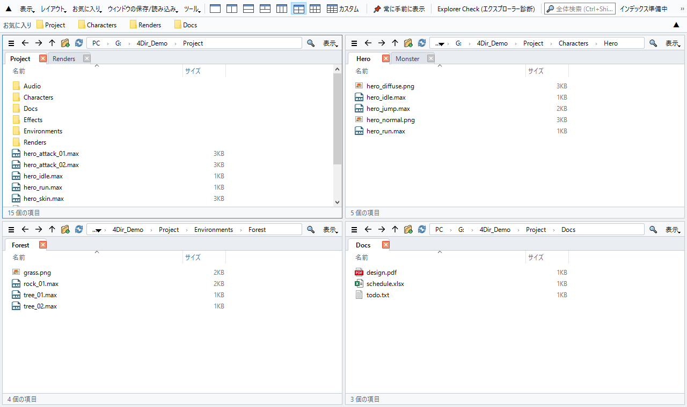
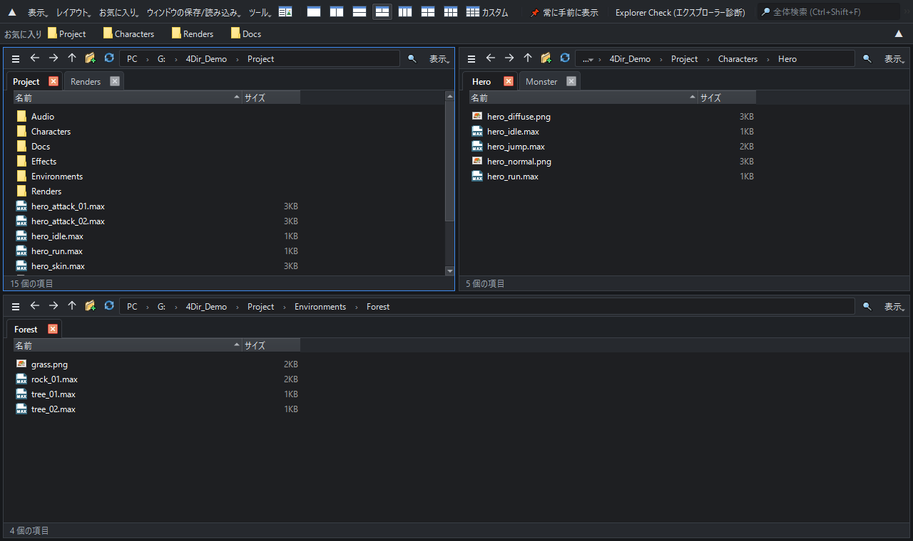

最大 20 ペイン。すべてのペインにタブ。PC に軽い。
Windows 10/11 用の無料ファイルマネージャー。インストール不要、展開してすぐ使えます。
Windows 10/11 64 ビット · 33 MB · 2026-10-21 · 無料

機能
最大 20 ペイン
1・2・3・4・6 ペインをワンクリックで、または最大 5 × 4 の自由なグリッドに。ペインごとに独立したタブ。
PC を重くしない
重い Windows シェルビューを使わず、フォルダーを直接読み込みます。待機中はタイマーもポーリングもなし。3ds Max やゲームなど重いアプリの横で開いたままでも安心です。
すぐに見つかる検索
入力するだけで全ドライブのファイル名を検索。独自インデックスがリアルタイムで更新され、管理者権限は不要です。
SVN の状態がひと目で
.svn を直接読んで変更・追加・競合のバッジを表示。中身が変わったフォルダーは赤に。Git・Perforce は Windows のオーバーレイで表示。
エクスプローラーと同じ操作感
同じショートカットキー、Windows の右クリックメニューそのまま、エクスプローラーや他のアプリとのドラッグ＆ドロップ。
ポータブルでプライバシーも安心
設定は 4Dir フォルダー内だけに保存。ライト/ダーク、10 言語、一括リネーム、セッション復元、エクスプローラー診断を搭載。

インストール方法
- 上のボタン（または GitHub の Releases）から zip をダウンロードします。GitHub の緑の「Code → Download ZIP」はソースコードのみで、そのままでは動きません。
- zip を右クリック → プロパティ → 許可するにチェック → OK。（しないと毎回セキュリティ警告が表示されます）
- 好きな場所に展開して 4Dir.vbs をダブルクリック。
Windows SmartScreen が表示されたら 詳細情報 → 実行 をクリック。4Dir は新しいソフトのためまだコード署名がありません。ソースコードは公開されています。
ダウンロードの確認（任意）
コマンドプロンプトで certutil -hashfile 4Dir_v0.9.58.zip SHA256 を実行し、結果が次と一致すれば正規ファイルです：
034d5d6fcdbefe6c4fe461013bc59dc2ffa29c802610677813914c4c450bfecc
4Dir を支援する
4Dir は無料で広告もありません。時間の節約になったなら、少額の寄付が次のアップデートの力になります。
よくある質問
本当に無料？
はい。4Dir は無料のオープンソース（GPL-3.0）です。広告・アカウント登録・試用期間はありません。
データを送信する？
個人情報は送信しません。1 日 1 回、新しいバージョンがあるかを確認するだけです（ツールメニューでオフにできます）。
問題が起きたら？
ツール → 問題報告用ログを保存 → できた zip を GitHub の Issue に添付してください。